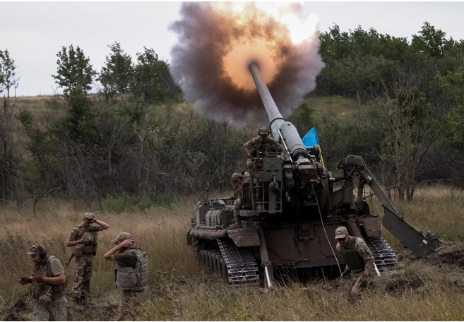

I. Nga điều trọng pháo, tấn công dồn dập các thành phố ở Ukraine

"Thành phố Nikopol đang phải hứng chịu những đợt tấn công dồn dập từ trọng pháo và pháo phản lực phóng loạt của quân đội Nga", người đứng đầu chính quyền quân quản tỉnh Dnipropetrovsk của Ukraine Valentyn Reznichenko viết trên trang Telegram cá nhân hôm 28/10.
Cuộc tấn công này là một phần trong chuỗi hàng loạt các vụ tấn công của quân đội Nga nhằm vào khu vực miền Nam và miền Đông Ukraine trong đêm 27/10, rạng sáng ngày 28/10. Ông Reznichenko cho biết đạn pháo Nga đã làm hư hỏng nhiều tòa nhà và công trình năng lượng trong thành phố. Hơn 1.000 hộ gia đình đã lâm vào cảnh mất điện sau trận pháo kích này.
Nhà chức trách thành phố Nikopol đang khẩn trương triển khai các biện pháp cứu hộ và khắc phục hậu quả. Thương vong về người hiện chưa được ghi nhận. Cũng trong đêm qua, các tên lửa S-300 được cải tiến cùng pháo binh Nga đã tập kích thành phố Mykolaiv ở miền Nam Ukraine.
Khoảng 2 giờ sáng, quân đội Nga đã tấn công Mykolaiv bằng các tên lửa phòng không S-300 được cải tiến để tấn công mặt đất. Một tòa nhà 3 tầng của chính quyền địa phương cùng một tòa nhà cao tầng đã bị phá hủy", người đứng đầu chính quyền quân quản vùng Mykolaiv Vitaly Kim xác nhận.
II. Nhận định của giới quan sát

Giới quan sát nhận định các cuộc tấn công dồn dập vào đêm qua là một nỗ lực của quân đội Nga nhằm phân tán lực lượng Ukraine và qua đó giảm bớt sức ép lên phòng tuyến Kherson. Từ nhiều tuần qua, quân đội Ukraine đã điều động rất đông binh sĩ và trang thiết bị quân sự nhằm nhanh chóng giành lại thành phố chiến lược ở miền Nam đang được các lực lượng thân Nga kiểm soát.
Đáp lại, quân đội Nga cũng tích cực tăng cường các đơn vị viện binh tinh nhuệ tại Kherson nhằm gia cố phòng tuyến này.
Trang Defense Express dẫn lời các nguồn tin tại Kherson cho biết trong 5 - 6 ngày qua, Moscow đã tăng cường thêm 6 đơn vị tác chiến cấp tiểu đoàn tới phòng tuyến Kherson. Các đơn vị này đa phần thuộc lực lượng lính dù thiện chiến với kinh nghiệm chiến đấu dày dạn của quân đội Nga. Bên cạnh đó, một lữ đoàn bộ binh cơ giới cùng 8 nhóm tác chiến từ Lực lượng Vệ binh Quốc gia Nga cũng đã được điều động về đây nhằm tăng cường sức mạnh hỏa lực và sự cơ động cho tuyến phòng thủ ở Kherson.